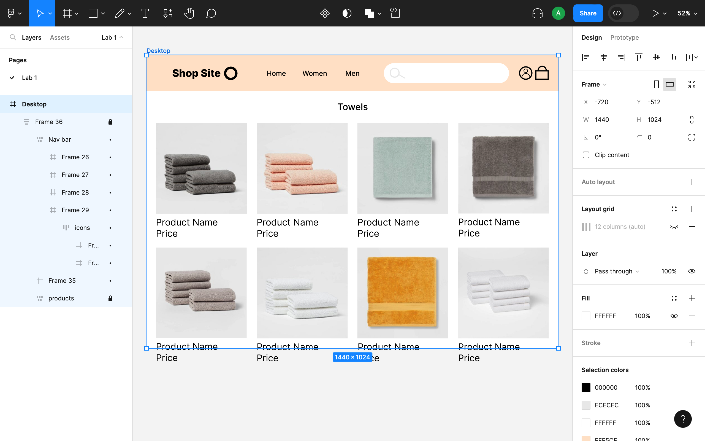
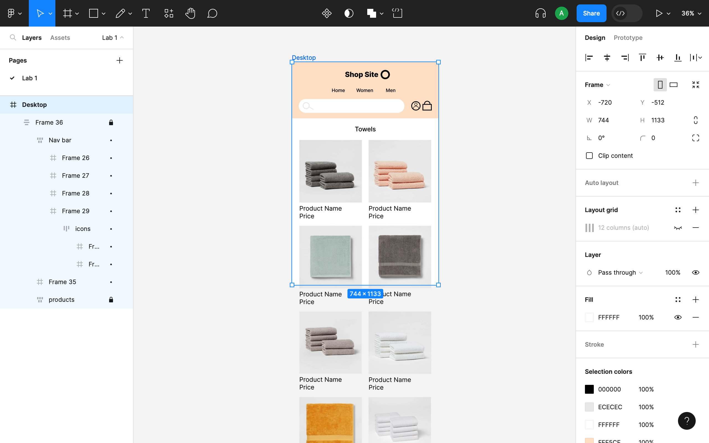
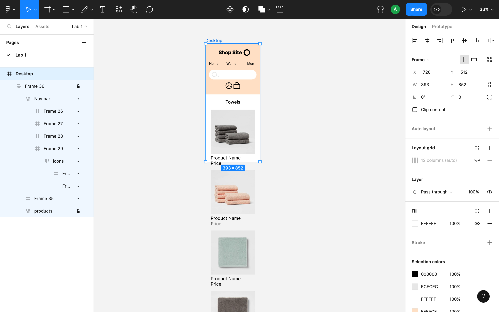

For Prototyping 2 I was tasked with creating an e-commerce site for a product of my choice with a focus on responsive design. I was to create a layout that presents rows of 4-8 products when viewed from a computer (wide viewport), rows of 2-4 when viewed from a tablet (mid-sized viewport), and only shows rows of 1-2 when viewed from a phone (narrow viewport).
  I used auto layout on every element in this prototype. I made the navigation bar using wrap around so elements would move below each other. I used auto layout for the frames with product pictures and descriptions then used auto layout on all the product frames together with wrap around. I think Figma’s wrap around feature was imperative to making responsive design happen. I think what their lack is the ability to make text and images shrink and grow with resizing.
A problem I encountered was the navigation bar and products conflicting with each other because the navigation bar would cover the products when it stretched down so I ended making an auto lay out of all the elements together and used wrap around. Since I achieved responsive design by making every element an auto layout frame I don’t think this prototype could be properly interactive because of scrolling so if I did it again I wouldn’t do it this exact way. I also had a problem with the search bar when shrinking the screen but I remembered the minimum width feature I learned from the Figma auto layout playground. I think after this I’ve become better with auto layout more than anything. I think what gave me the most trouble with auto layout is knowing when to use hug vs fixed. Before this I had only barely used but now I’m pretty comfortable with it.